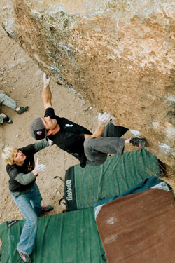

|
e-Grips Routesetting Interview: Lance Hadfield 
How long have you been setting and climbing? "I have been climbing for over twenty five years. I set my first competition about 20 years ago." How did you learn? "I started route setting by teaching myself as there weren’t as many setters and gyms when I started. I really enjoy working with other setters and for competitions to experience new styles, ideas and techniques." What do you most enjoy about setting? "My favorite event that I was a part of was setting for Junior Nationals 2007. I also enjoyed setting the Division Two Championships." What makes a "good" routesetter? "I think a good route setter is someone who is willing to take feedback, give feedback, and is always willing to try to improve on a route or boulder problem that they have set." What do you think makes YOU a "good" routesetter? What would your friends say? "What makes me a good route setter is that I enjoy using good holds and creative body movement to make things hard to read and entertaining to try. I am also willing to admit when a problem is bad or not fun. I am always willing to make the necessary changes to improve the problem or make it fun." Where have you, or do you, set? "I have been the Head setter/Manager for Stone Age for ten years. I love my job and the people I work with." Do you have any favorite moves or problems that you’ve set? "I enjoy problems I set when I get to build volumes, tweak or modify holds that surprise competitors." What is your favorite e-Grips set? "My favorite e-grip holds are the loaves and bubble wraps. My second favorite sets are the other e-grips holds." Favorite Unique Feature? "My favorite unique feature is the red box I constructed for USAC Divisionals in 2007" Finally, how would you describe what makes e-Grips handholds the best? "I think what makes e-grips the best hand holds are their artistic beauty, longevity, flexibility and overall quality." |